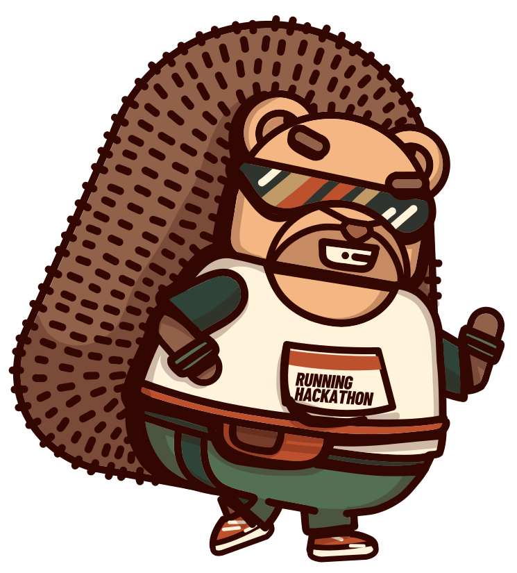
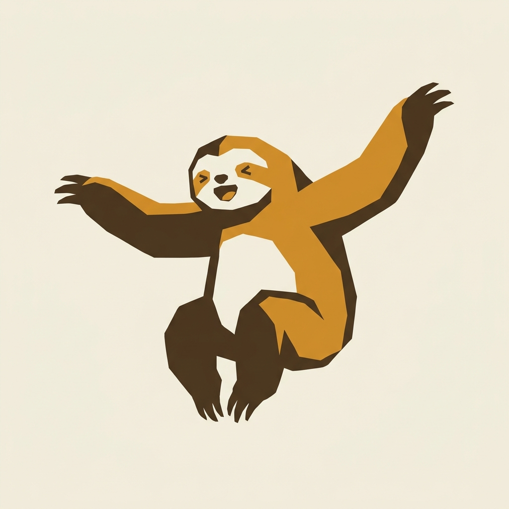
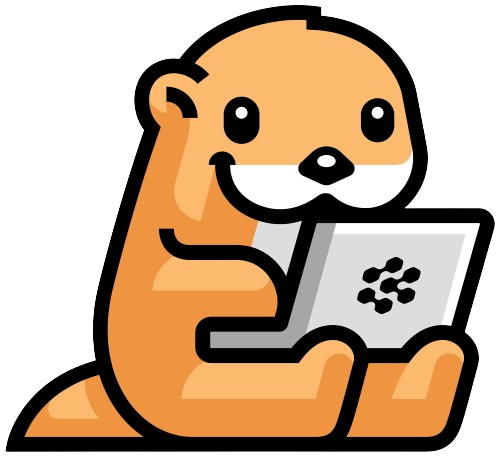

Meet your team.
Runners, builders and first-timers. Find a team and a big idea.

Meet a team, head outside, and use your voice and AI to build as you run.
Come back together and show what you made.
How it works


Runners, builders and first-timers. Find a team and a big idea.
Talk to your agents while you run and let them do the magic.
What you build and how far you run. Neither alone is enough :)